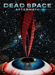

← 2011 →
Overall
Movie Cover Collage Released in 201121 Movies Top 10 series watched
|
Movies released in 2011
 Mission: Impossible - Ghost Protocol (2011) Releases on 1969-12-31  Sherlock Holmes: A Game of Shadows (2011) Releases on 1969-12-31 Stephen Klancher: December 17, 2011 Quite fun. Good pacing, fun effects, always like to see those actors. Would like to see Naomi Rapace as a main character again though. She just kind of tagged along in this movie.  J. Edgar (2011) Releases on 1969-12-31 The Rum Diary (2011) Releases on 1969-12-31 Stephen Klancher: November 17, 2011 Good times. "Oh no, it's that cop we set on fire. Try to look normal."  50/50 (2011) Releases on 1969-12-31 Stephen Klancher: September 30, 2011 That managed a pretty rare balance between emotion and comedy. Actors I enjoy as well. Conan the Barbarian (2011) Releases on 1969-12-31 Stephen Klancher: August 22, 2011 That was pretty bad. Slept through much of the end. Even when I knew the "climactic" battle was being fought at the end it wasn't worth keeping my eyes open.  Cowboys & Aliens (2011) Releases on 2011-07-29 Stephen Klancher: August 1, 2011 Felt like it was pieced together from many different westerns and sci-fi stories... but in an enjoyable way.  Captain America: The First Avenger (2011) Releases on 2011-07-22  Green Lantern (2011) Releases on 2011-06-17 Stephen Klancher: June 18, 2011 Not great but I still enjoyed it. Visually I liked how massive the villain Parallax was.  Kung Fu Panda 2 (2011) Releases on 2011-05-26 Stephen Klancher: June 11, 2011 Not up to the same level as the first, but still enjoyable. Keith and I saw this after golfing.  Super 8 (2011) Releases on 2011-06-10 Stephen Klancher: June 10, 2011 I was not interested in this based on the preview, but Nick and Grant really wanted to see it. It was a surprisingly great film. It was funny throughout and I loved the Goonies vibe from the cast. Very fun.  Bridesmaids (2011) Releases on 2011-05-13  Thor (2011) Releases on 2011-05-06 Stephen Klancher: May 6, 2011 That turned out to be pretty good. Humor throughout and plenty of badass-ary.  Dead Space: Aftermath (2011) Releases on 2011-01-25 Stephen Klancher: April 27, 2011 The second half with Stross and the girl's stories were more fun and better animated. The CG wasn't great, but it worked well enough for what it was.  Source Code (2011) Releases on 2011-04-01  Sucker Punch (2011) Stephen Klancher: March 25, 2011 Awesome, but I was the only one who thought so. It's interesting because this accomplishes the same thing as the movie 300: focus on visuals, little on characters or plot. But I like this way more and other people seem to like it less. The thing is, if it isn't going to have a solid story, I want it to be outrageous. That's why I'm not drawn to most action movies: the stories are often very generic, but then the action also tends to fall into the same categories you'll see in any "realistic" movie... car chase, shootout, hero jumping away from explosion. Even a lot of sci-fi movies don't stray too far with the action. I want something crazier. This was like a live action anime, Inception styled world, where they fight samurai, steampunk Nazi zombies, robots, goblins, and dragons, and is shot as a constant music video. The one part I did get agreement on was that it had good music, so that aspect worked pretty well.  Andy and Zach (2011) Releases on 0000-00-00 Stephen Klancher: January 22, 2011 Surprisingly good. Cared more about the characters in this 10 minute short than I have in many full movies. The Green Hornet (2011) Releases on 2011-01-14 Stephen Klancher: January 21, 2011 That was a lot more fun than I expected. Kato's target vision, and fight scenes in general, were very fun. Christoph Waltz makes for a uniquely funny villain. |
Movie watching by month
![Progress Bar](data:image/png;base64,iVBORw0KGgoAAAANSUhEUgAAASwAAADICAIAAADdvUsCAAAACXBIWXMAAA7EAAAOxAGVKw4bAAAD
M0lEQVR4nO3cMUqcURSA0ZcgRFKkSuEaUllYmToLsbIccAWzGxcws4JZg/WAIphuIJ02pnADCf+D
bxLPWcDlH+XjNo/74fX1dcAYY4zD4bDf75fP2Ww26/V6+Zx34mP9AfDeiRBiIoSYCCEmQoiJEGIi
hJgIISZCiIkQYiKEmAghJkKIiRBiIoSYCCEmQoiJEGIihJgIISZCiIkQYiKEmAghduLeK7RsQoiJ
EGIihJgIISZCiIkQYiKEmAghJkKIiRBiIoSYCCEmQoiJEGIihJgIISZCiIkQYiKEmAghJkKIiRBi
IoSYCCEmQoiJEGIihJgIISZCiIkQYiKEmAghJkKIiRBiIoSYCCEmQoiJEGIihJgIISZCiIkQYiKE
mAghJkKIiRBiIoSYCCEmQoiJEGIihJgIISZCiIkQYiKEmAghJkKIiRBiIoSYCCEmQoid1B/wLzkc
Dvv9fvmczWazXq+Xz3kz8atWq9XyOfwtmxBiIoSYCCEmQoiJEGIihJgIISZCiIkQYiKEmAghJkKI
iRBiIoSYCCEmQoiJEGIihJgIISZCiIkQYiKEmAghJkKIzTz+e5y3ceHI2YQQEyHERAgxEUJMhBAT
IcRECDERQkyEEBMhxEQIMRFCbOYD7okmvgVfrVYTRy2f82buD1w+h5BNCDERQkyEEBMhxEQIMRFC
TIQQEyHERAgxEUJMhBA70rejJG5uPp+dfV0+Z7v98fQ0zs+XTxq73a/b2y8TBo0xxri6ej47+7l8
znb7uNt9m/X61yaEmAghJkKIiRBiIoSYCCEmQoiJEGIihJgIISZCiIkQYicT3+ze3xv1p6MmHuyd
+B+8uFg+Zr7r62lvwU9PP00YNMaY+me3CSEmQoiJEGIihJgIISZCiIkQYiKEmAghJkKIiRBijv82
/vsHny8vzw8PE87s3t09Xl5+Xz7nmNmEEBMhxEQIMRFCTIQQEyHERAgxEUJMhBATIcRECDERQkyE
EBMhxEQIMRFCTIQQEyHERAgxEUJMhBATIcRECDERQszxX47dxDvCF0d5KdkmhJgIISZCiIkQYiKE
mAghJkKIiRBiIoSYCCEmQoiJEGK/ActYjtFdoitUAAAAAElFTkSuQmCC)
Series watching by month
![Progress Bar](data:image/png;base64,iVBORw0KGgoAAAANSUhEUgAAASwAAADICAIAAADdvUsCAAAACXBIWXMAAA7EAAAOxAGVKw4bAAAD
PUlEQVR4nO3bMU7cUBRA0UlElTrFLIOCLWQhVJRI6dJ5FWzErIA1ULtAKdJZSgcN6RIpFYp/dD3D
OQt4GgnuvG97/OH19fUAo63ruizL9jnzPE/TtH3Onn2sPwC8dyKEmAghJkKIiRBiIoSYCCEmQoiJ
EGIihJgIISZCiIkQYiKEmAghJkKIiRBiIoSYCCEmQoiJEGIihJgIISZCiIkQYiKEmAghJkKIiRBi
IoSYCCEmQoiJEGIihJgIISZCiIkQYiKEmAghJkKIiRBiIoSYCCEmQohd1B/glKzruizL9jnzPE/T
tH0O58EmhJgIISZCiIkQYiKEmAghJkKIiRBiIoSYCCEmQoiJEGIihJgIISZCiIkQYjt9qdfrs7wf
NiHERAgxEUJMhBATIcRECDERQkyEEBMhxEQIMRFCTIQQEyHERAgxEUJMhBATIcRECDERQkyEEBMh
xEQIMRFCTIQQEyHERAgxEUJMhBATIcRECDERQkyEEBMhxEQIMRFCTIQQEyHERAgxEULsYuCsdV2X
Zdk+Z57n29vb7XPgJNiEEBMhxEYeR3m7gUf3aZq2zyFkE0JMhBC7uLk5XF4OGPTw8PPubsCcPfv6
9dPx+Hn7nPv7L+7+vt3ZH91tQoiJEGIihJgIIXb+zwkHXtYfDt+2z4G/2IQQEyHERh5HPUbjfxj4
f7XLx4Q2IdRECDERQkyEEDv/54Tw2z5/C24TQkyEEHMchX8x8EVcmxBiIoTYTo+jfgF36gb+Ba+u
to/ZNZsQYhcvL89PTz+2D3p8/H61y68sX8nsnE0IMRFCbKc3Zs7e0DtPe/wp1j4NvTYZdh1nE0JM
hBBzHOWP6+vn43HAEev+fqe3yvfJJoSYTXjyPAg9dTYhxEQIMRFCTIQQEyHERAgxEUJMhBATIcRE
CDERQkyEEBMhxEQIMRFCTIQQEyHERAgxEUJMhBATIcRECDERQkyEEBMhxEQIMRFCTIQQEyHERAgx
EUJMhBATIcRECDERQkyEEBMhxEQIMRFCTIQQEyHERAgxEUJMhBATIcRECDERQkyEEBMhxEQIMRFC
TIQQEyHERAgxEUJMhBATIcRECDERQkyEEBMhxEQIsV9wX4+hOdWz1wAAAABJRU5ErkJggg==) |